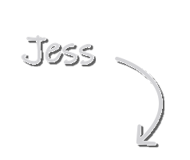

Interfaces you don't have to think about.
Calm, well-crafted interfaces, grounded in research and carried all the way to a clean dev handoff.
Calm, well-crafted interfaces, grounded in research and carried all the way to a clean dev handoff.
01 How I work
Align on the problem, the people, the constraints and what "success" will be measured by.
02 How I work
Learn from real users and the market before drawing a single screen.
03 How I work
Turn findings into structure: who we're designing for and how the product is organized.
04 How I work
From low-fidelity sketches to a high-fidelity UI backed by a component system.
05 How I work
Test with users, measure, and fix what matters most before anything gets built.
06 How I work
Hand off with specs, tokens and annotations, then follow the numbers after launch.
Communication and close collaboration run through the whole process, so you always know what I'm designing, why, and what I need from you next. Here's how that plays out in real projects.

Muvr's two apps, one for the person moving and one for the driver doing the move, with the core flows rebuilt from scratch. Freelance.
View case
A 0 → 1 app that lets people in Brazil pay any Pix (Brazil's instant payments) straight from their crypto balance. From blank file to dev-ready in about six weeks.
View caseI treated my own site like a client project: a token system of paper, ink and six sticky-note colors, four type families with a job each, accessible components, a 3D story of how I work, and guidelines that explain every decision.
Read the guidelinesHeuristic evaluation, analytics readout and user interviews to find what's actually blocking your users.
You get
From discovery to handoff for a new product or a major feature: flows, wireframes, UI, prototype, testing.
You get
Tokens, components with every state, usage docs and a governance model your team can keep alive.
You get
Interactive prototypes tested with real users, with clear metrics and a plan for the next iteration.
You get
Thirty minutes about your product, the people using it and the deadline. No prep needed.
Scope, deliverables and timeline in writing, so we agree on what "done" means before any work starts.
Progress in Figma every week, with each decision explained in a short note.

nice to meet you
I design products end to end, from the first research question to files developers can build from without guessing.
I test before I polish and write every decision down, so the thinking survives the handoff and the next person on the file never starts from zero.
the one rule I design by“Good design is on your side,
never in your way.”
Two paths taught me what that means.
The eye
My path began with colors and lines, in illustration, long before I opened Figma. That trained my eye for balance, rhythm and the small details people feel before they notice. That eye is what I bring to every interface: a hierarchy that guides attention, consistency across every state and screen, and the finish that makes a product feel trustworthy. When a brand calls for a visual language of its own and the scope allows it, I carry that craft into custom illustration and iconography.
In practice Visual hierarchy UI consistency Illustration, when in scope
The mindset
Freelancing turned the world into my office. Every new team brought a new rhythm and every culture a new way of seeing, so I learned to adapt fast, stay curious and design with empathy. It's why I get up to speed quickly in a new domain, from fintech rules to hospitality, and fit into the way a team already works instead of asking it to fit mine.
In practice Fast ramp-up Cross-cultural teams Async-friendly
Have a product, a feature or a messy flow?
Tell me about it.
Open to new projects